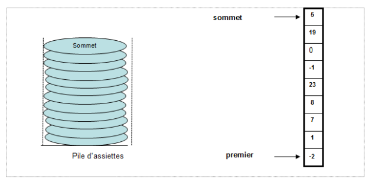
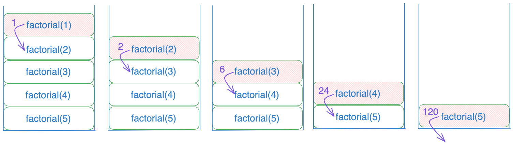
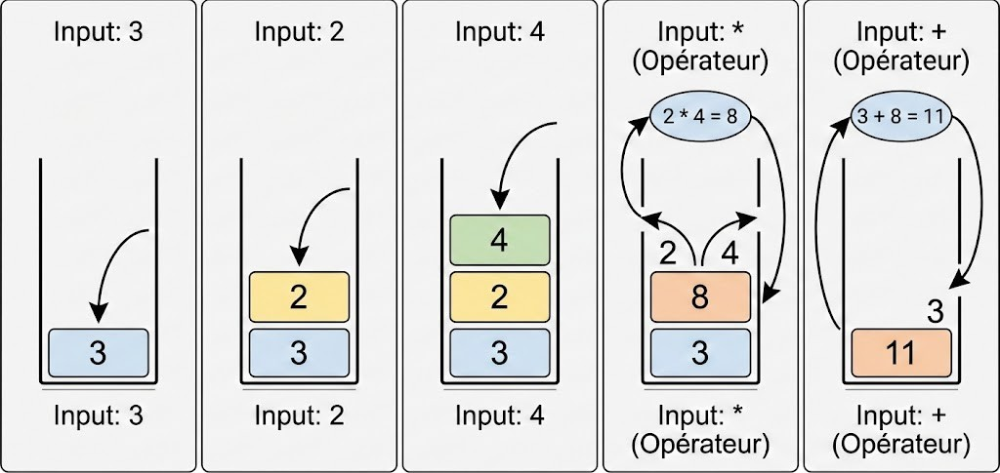

Une pile est une structure qui permet de ranger des éléments les uns sur les autres, un peu comme une tour.
On ajoute toujours le nouvel élément en haut de la pile, et lorsqu’on veut retirer quelque chose,
c’est toujours celui du dessus qu’on prend. On appelle ce principe LIFO,
pour Last In, First Out, c’est-à-dire “dernier arrivé, premier sorti”.
Imaginez une pile d’assiettes dans votre cuisine. Vous mettez la première assiette sur le fond,
puis vous posez la suivante dessus, puis encore une autre. Si vous voulez prendre une assiette pour manger,
vous prenez celle du dessus. Il est impossible de prendre celle du milieu sans enlever celles qui sont au-dessus.
Tout doit suivre l’ordre de la pile.
On peut faire la même chose avec une pile de livres ou de cartes : chaque nouvel élément est ajouté sur le dessus,
et le dernier ajouté sera le premier que vous pourrez prendre. Ça peut paraître simple, mais ce principe est très utile !
En informatique, on utilise des piles pour plein de choses ! C'est ce qu'on va voir en détail dans cette page.

Exemple d’une pile : chaque nouvel élément est ajouté au sommet et retiré en dernier.
Opérations principales d’une pile
Opérations
Description
Empiler
Ajouter un élément au sommet d'une pile
Dépiler
Retirer l’élément du sommet d'une pile
Par exemple, en langage C, une représentation d'une pile d'entiers peut être :
typedef struct {
int capacite;
int hauteur;
int* tab;
}Pile;
Principales utilisations des piles
Les piles permettent de gérer des éléments ou des actions dans un ordre précis : le dernier ajouté est le premier à être retiré.
Cette logique est utilisée dans de nombreux programmes et applications.
1. Appels de fonctions et gestion de mémoire
Chaque fonction appelée dans un programme doit conserver certaines informations : variables locales, paramètres et adresse de retour.
Ces informations sont stockées dans une pile d’exécution. Cela permet à l’ordinateur de revenir exactement là où il s’était arrêté lorsque la fonction se termine.
Exemple : Fonction récursive factorielle
Prenons la fonction récursive factorielle, qui calcule le produit de tous les nombres de 1 jusqu’à n.
Chaque appel à la fonction est empilé pour se souvenir des variables et de l’endroit où revenir après l’exécution.

Pile d’exécution pendant les appels récursifs de factorielle
Explication étape par étape de l'appel de la fonction factorielle(n) pour n = 5
Appel de factorielle(5) → informations empilées sur la pile.
Appel de factorielle(4) → empilé au-dessus.
Appel de factorielle(3) → empilé au sommet de la pile.
Appel de factorielle(2) → empilé au sommet.
Appel de factorielle(1) → empilé au sommet (condition de fin atteinte).
Retour de factorielle(1) → dépilé, valeur retournée à factorielle(2).
Retour de factorielle(2) → dépilé, calcul de 2 * 1 = 2.
Retour de factorielle(3) → dépilé, calcul de 3 * 2 = 6.
Retour de factorielle(4) → dépilé, calcul de 4 * 6 = 24.
Retour de factorielle(5) → dépilé, calcul final 5 * 24 = 120.
Remarque sur la gestion de mémoire :
Chaque fois qu’une fonction est appelée, la mémoire nécessaire pour ses variables locales et paramètres est réservée dans la pile d’exécution.
Quand la fonction se termine, cette mémoire est libérée automatiquement.
C’est pour ça que la pile est très pratique pour gérer les fonctions récursives : elle organise la mémoire de manière temporaire et ordonnée.
Cependant, si trop de fonctions sont empilées sans retour (comme dans une récursion infinie), la pile peut se remplir et provoquer un Stack Overflow.
2. Évaluation d’expressions et calculatrices
Les piles sont très utiles pour calculer des expressions mathématiques, notamment lorsqu’on veut s’assurer que les opérations se font dans le bon ordre.
Par exemple, une expression comme 3 + 4 * 2 doit être évaluée en respectant les priorités des opérateurs.
Les calculatrices scientifiques utilisent ce principe : elles empilent les nombres et les opérateurs dans une pile afin de résoudre correctement les calculs.
Les programmes informatiques peuvent aussi convertir des expressions d’un format infixe (comme on écrit habituellement) en format postfixé ou préfixé pour faciliter le calcul.

Utilisation d’une pile pour évaluer une expression mathématique
Exemple : calcul de l’expression 3 + 4 * 2 avec une pile
Lire le premier nombre 3 → empilé sur la pile.
Lire l’opérateur + → empilé sur la pile.
Lire le nombre 4 → empilé sur la pile.
Lire l’opérateur * → empilé sur la pile.
Lire le nombre 2 → empilé sur la pile.
Évaluer l’opération au sommet selon la priorité → dépiler 4 et 2 puis appliquer *, résultat 8.
Dépiler l’opérateur + et le nombre 3, puis ajouter 8 → résultat final 11.
Ces étapes montre comment la pile organise temporairement les nombres et opérateurs pour que les calculs soient effectués correctement.
Le dernier élément ajouté à la pile est le premier à être utilisé pour l’évaluation, respectant ainsi le principe LIFO.
Les piles sont donc fondamentales dans les calculatrices, les interprètes et les compilateurs, car elles permettent de gérer facilement les expressions complexes et les priorités des opérations.
3. Annuler et rétablir (Undo / Redo)
Dans beaucoup de logiciels, les piles sont utilisées pour gérer l’historique des actions de l’utilisateur.
Chaque action effectuée est ajoutée au sommet d’une pile appelée pile Undo.
La dernière action effectuée est donc la première à pouvoir être annulée.
Lorsque l’utilisateur clique sur Annuler, la dernière action est retirée de la pile Undo
et placée dans une seconde pile appelée pile Redo.
Cela permet, si besoin, de rétablir cette action plus tard.
Exemple :
L’utilisateur écrit le mot "Bonjour" → action empilée dans la pile Undo.
Il met le mot en gras → action empilée.
Il ajoute un point à la fin → action empilée.
Cliquer sur Annuler retire la dernière action (ajout du point) de la pile Undo et la place dans la pile Redo.
Cliquer sur Rétablir replace cette action dans la pile Undo et l’exécute à nouveau.
Ce fonctionnement repose entièrement sur le principe des piles : le dernier changement effectué est toujours le premier à être annulé ou rétabli.
Exemples logiciels : Word, Google Docs, Photoshop.